class: center, middle .title[Lecture 1: Essential statistics] .author[Shane Elipot] .institution[The Rosenstiel School of Marine and Atmospheric Science, University of Miami] .coauthor[] .institution[] .date[] .note[] .footnote[Created with [{Remark.js}](http://remarkjs.com/) using [{Markdown}](https://daringfireball.net/projects/markdown/) + [{MathJax}](https://www.mathjax.org/)] --- name: foreword class: left, .toc[[✧](#toc)] ## Foreword **Statistics** (*noun, plural in form but singular or plural in construction*) 1. *Merriam-Webster*: a branch of mathematics dealing with the collection, analysis, interpretation, and presentation of masses of numerical data -- 2. *Oxford dictionnary of English*: > a. the practice or science of collecting and analysing numerical data in large quantities, especially for the purpose of inferring proportions in a whole from those in a representative sample. > b. a collection of quantitative data (e.g. *The statistics of the data are unknown*.) -- **Statistic** (*noun*) a single term or datum in a collection of statistics (e.g. *The mean of the data is zero*.) --- name: references class: left, .toc[[✧](#toc)] ## References [1] Bendat, J. S., & Piersol, A. G. (2011). *Random data: analysis and measurement procedures* (Vol. 729). John Wiley & Sons. [2] Thomson, R. E., & Emery, W. J. (2014). *Data analysis methods in physical oceanography*. Newnes. [dx.doi.org/10.1016/B978-0-12-387782-6.00003-X](http://dx.doi.org/10.1016/B978-0-12-387782-6.00003-X) [3] Taylor, J. (1997). *Introduction to error analysis, the study of uncertainties in physical measurements*. [4] Press, W. H. et al. (2007). *Numerical recipes 3rd edition: The art of scientific computing*. Cambridge university press. [5] Kanji, G. K. (2006). *100 statistical tests*. Sage. [6] von Storch, H. and Zwiers, F. W. (1999). *Statistical Analysis in Climate Research*, Cambridge University Press --- class: left, .toc[[✧](#toc)] ## Foreword A quote from *Data Analysis Methods in Physical Oceanography*, Thompson and Emery, Third Edition, 2014: "Statistical methods are essential to determining the value of the data and to decide how much of it can be considered useful for the intended analysis. This statistical approach arises from the fundamental complexity of the ocean, a **multivariate** system with many **degrees of freedom** in which nonlinear dynamics and **sampling** limitations make it difficult to separate scales of **variability**." What do **multivariate**, **degrees of freedom**, **sampling**, and **variability** mean in this context? <!-- <span style="color:blue">some *blue* text</span>. --> --- name: toc class: left, .toc[[✧](#toc)] # Lecture 1: Outline 1. [Introduction](#introduction) 1. [Estimation vs Truth](#estimation) 2. [Fundamental Statistics](#fundamentals) 3. [Common Distributions](#distributions) <!-- 1. [uniform](#uniform) 1. [normal](#normal) 1. [exponential](#exponential) 1. [`$\chi^2$`](#chi2) 1. [Student's `$t$`](#tstudent) --> 4. [Errors, Uncertainties, and hypothesis testing](#errors) 5. [Extra slides](#extra) --- name: introduction class: center, middle, .toc[[✧](#toc)] # 1. Introduction --- class: left, .toc[[✧](#toc)] ## Introduction In oceanography and atmospheric science, we have at our disposal a number of physical theories, that is equations, that describe the spatial and temporal variability of the climate system. -- Specifically, in geophysical fluid dynamics, the Navier-Stokes equations describe the motion of a fluid in 2D or 3D. Yet, we do not know if these equations have reasonable physical solutions (If you figure this out, there's a $1M prize from the [Clay Mathematics Institute](http://www.claymath.org/millennium-problems/navier–stokes-equation)). Assuming that they do, then the ocean, as an example, can be seen as being a *deterministic system*, which means that mathematical expressions can be used to describe completely the velocity and pressure field (e.g. `$p(\mathbf{x},t) = p_0 \cos(\omega t - \mathbf{k} \cdot \mathbf{x})$`). -- Yet, even if we do not know the analytical solutions, we can discretize the equations within a computer models to obtain approximate solutions describing the flow deterministically ... (in theory). --- class: left, .toc[[✧](#toc)] ## Introduction A deterministic approach is not realistic because of three commonly acknowledged reasons. The ocean and the atmosphere are *complex*, *nonlinear*, and *unpredictable*. -- As an example, there is an estimated $4.7 \times 10^{46}$ water molecules in the ocean (that's complexity) so that there are too many variables, and too many initial and boundary conditions to be specified, (jointly forming the number of *degrees of freedom* of the system) in order to solve all equations numerically in a computer model. Because many variables cannot be observed, or are unspecified at the start of a simulation, outcomes will appear *random* to the observer (that's *unpredictability*). -- Finally, ocean and atmosphere are *nonlinear* which means that you cannot really find a portion of the system (e.g. surface gravity waves) with a finite number of *degrees of freedom* whose evolution is isolated and can be made deterministic. Unknown perturbations will render the observations to contain randomness, or *noise*. --- class: left, .toc[[✧](#toc)] ## Introduction Once we accept that the climate is not a purely deterministic system, but contain *randomness*, we can rely on a suite of tools especially applicable to *stochastic systems or processes*. * * * **stochastic** (*adjective, technical*) having a random probability distribution or pattern that may be analysed statistically but may not be predicted precisely. * * * As a consequence, in the rest of this lecture, we will often discuss *random variables* (hereafter r.v.), that is variables to which statistical theory can be applied. In addition, we will take the approach that our system, or that our observational data, can be separated into *signal* plus *noise*. As an example, estimation of the seasonal cycle of ocean temperature (the sought after signal) is disturbed by changes due to ocean currents, but also changes due to the imperfections of your temperature sensors, etc. --- name: estimation class: center, middle, .toc[[✧](#toc)] # 2. Estimation vs truth --- class: left, .toc[[✧](#toc)] ## Estimation vs truth We are in the business of *estimation*: we try to describe and/or understand the climate system by estimating the value of a *random variable*. This r.v. may be a physical variable such as air temperature, water vapor, sea ice area, sea surface temperature, sea level, snow cover, glacier volume, CO$_2$ concentration, etc. -- Or it may be a variable derived from one or several other r.v., in essence a *parameter*. This parameter is itself a r.v. As an example ocean heat content, the daily mean temperature, the decadal temperature trend, the acoustic travel time in water, the amplitude of the seasonal cyle of temperature, the adiabatic lapse rate, the power spectral density function of velocity, the precipitation rate, etc. -- The distinction between variable and parameter is maybe semantic. In any case, let's call `$\phi$` a r.v. of interest. --- class: left, .toc[[✧](#toc)] ## Estimation vs truth Unfortunatelly, it is likely that we will never know $\phi$ exactly, but only access an *estimate* that we will note `$\widehat{\phi}$` ($\phi$ "hat"). This estimate means we use a given method or a given instrument to measure or calculate $\phi$. -- As an example, we want to know the temperature of the room. We can: 1. use one temperature sensor at one fixed location (in the middle of the room), repeatedly through time, $N$ times. 2. use $N$ temperature sensors, once. 3. use one temperature sensor, used repeatedly $N$ times, each time in a different corner of the room 4. etc. Each one of these methods leads to one estimate of "the temperature of the room". --- class: left, .toc[[✧](#toc)] ## Expectation of an estimate Let's assume that we design an experiment and obtain `$\widehat{\phi}$`, repeatedly `$N$` times. The *expectation* value of `$\widehat{\phi}$`, denoted `$E[\widehat{\phi}]$`, is `$$ E[\widehat{\phi}] = \lim_{N\to\infty} \frac{1}{N} \sum_{n=0}^N \widehat{\phi}_n $$` where `$\widehat{\phi}_n$` is the estimate from the `$n$`-th experiment. Unfortunatelly, since we must have `$N \rightarrow \infty$`, the expectation cannot be known. -- However, if we can reasonably make some assumptions about the statistics of the r.v. itself, and/or if we know the specifications of our instruments, then we can sometimes derive the expectation of our estimator. -- **Why is this important?** -- **To assess how good our estimate is.** --- name: bias class: left, .toc[[✧](#toc)] ## Expectation of an estimate Let's assume that we have access to the expectation $E[\widehat{\phi}]$ of an estimator $\widehat{\phi}$ of the r.v. ${\phi}$. -- If we are lucky, `$E[\widehat{\phi}] = \phi$`, and the estimator `$\widehat{\phi}$` is said to be *unbiased*. -- Otherwise, it is said to be *biased* and we define *the bias of the estimator*: `$$ b[\widehat{\phi}] = E[\widehat{\phi}] - \phi, $$` which constitutes a *systematic error* of the estimate. -- In addition, the value of the estimator will change from one experiment to the next, so we define the *variance* of the estimator, denoted $\text{Var}[\widehat{\phi}]$, as `$$ \text{Var}[\widehat{\phi}] = E[(\widehat{\phi}-E[\widehat{\phi}])^2], $$` which constitutes the *random error* of the estimate. --- name: MSE class: left, .toc[[✧](#toc)] ## Expectation of an estimate The bias and the variance of the estimator contributes both to its *total error*, which can be assessed by the *mean square error* (MSE): `$$ \begin{eqnarray} MSE[\widehat{\phi}] = E[(\widehat{\phi} - \phi)^2] = \text{Var}[\widehat{\phi}] + (b[\widehat{\phi}])^2,\cr \end{eqnarray} $$` usually reported as the *root mean square error*: `$$ RMS = \sqrt{MSE[\widehat{\phi}]}= \sqrt{\text{Var}[\widehat{\phi}] + (b[\widehat{\phi}])^2}$$` Another sometimes useful quantity is the *normalized rms error*: `$$ \varepsilon[\phi] = \frac{\sqrt{E[(\widehat{\phi} - \phi)^2]}}{\phi} \quad \text{for} \quad \phi \neq 0,$$` which is unitless and can be reported as a percentage. --- class: left, .toc[[✧](#toc)] ### Estimation vs truth <!-- `$$MSE[\widehat{\phi}] = \text{Var}[\widehat{\phi}] + (b[\widehat{\phi}])^2$$` --> From the International Organization for Standardization (ISO) publication [5725-1:1994](https://www.iso.org/obp/ui/#iso:std:iso:5725:-1:ed-1:v1:en) *Accuracy (trueness and precision) of measurement methods and results — Part 1: General principles and definitions* Introduction 0.1 ISO 5725 uses two terms "trueness" and "precision" to describe the accuracy of a measurement method. "Trueness" refers to the closeness of agreement between the arithmetic mean of a large number of test results and the true or accepted reference value. "Precision" refers to the closeness of agreement between test results. 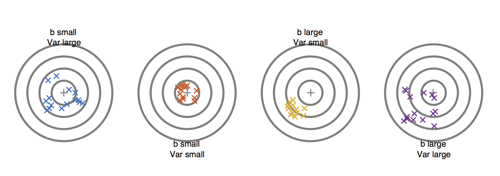 --- name: 911specs class: left, .toc[[✧](#toc)] ###Example .center[Specification sheets of Seabird 911 CTD Plus sensors: 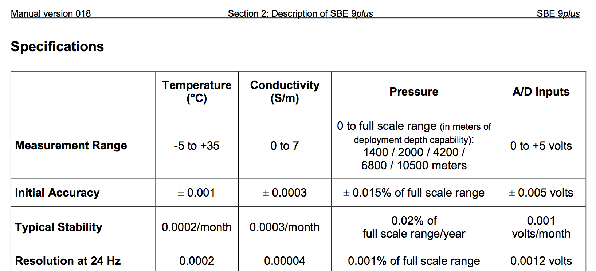 ] -- An interpretation is that the accuracy is the total error, or $RMS$ error which is originally only the random error. The stability implies that the bias, originally zero, increases with time. --- name: fundamentals class: center, middle, .toc[[✧](#toc)] # 2. Fundamental statistics --- class: left, .toc[[✧](#toc)] ## Fundamental statistics Let's consider a random variable $x$, for which we obtain (that is measure, calculate) values $X_n$, dependent on an index $n$ along a given dimension, or scale (e.g. temperature as a function of time, sea level along a satellite track, oxygen concentration as a function of depth etc). -- Statistical theory often considers r.v. that are continuous, as in $X(t)$. Since we are typically dealing with digital or numerical data that are discrete, we will take a discrete approach in this course, as in $X_n = X(t_n) = X(n\Delta t) $ where $\Delta t$ is the step of the record. Sometimes, we will need to revert to continuous notations when needed; as an example: `$$ \sum^N_{n=0} X_n \Delta t \Longleftrightarrow \int_0^{T} X(t) dt, \quad T=N\Delta t $$` --- class: left, .toc[[✧](#toc)] ## Mean The first statistical quantity to consider is the *true mean, population mean, or expectation* of $x$: `$$ \mu_x \equiv E[X] = \lim_{N\to\infty} \frac{1}{N}\sum_{n=1}^N X_n $$` -- Unfortunatelly, we only have a finite numbers of estimates `$X_n,\, n = 1,\ldots,N$` so we compute the *sample mean* `$$ \overline{X} \equiv \frac{1}{N}\sum_{n=1}^N X_n = \widehat{\mu}_x $$` where the last equality means that the **sample mean is an estimator of the true mean of $x$**. --- class: left, .toc[[✧](#toc)] ## Variance The next statistical quantity of interest is the *variance* of $x$: `$$ \sigma^2_x \equiv E[(X-\mu_x)^2]. $$` $\sigma_x = \sqrt{\sigma^2_x}$ is called the *standard deviation*. -- An estimator of $\sigma^2_x$ is the *sample variance* $s_x^2$: `$$ s_x^2 = \widehat{\sigma}^2_x = \frac{1}{N-1}\sum_{n=1}^N (X_n-\overline{X})^2 = \frac{1}{N-1}\sum_{n=1}^N \left(X_n - \frac{1}{N}\sum_{n=1}^N X_n\right)^2 $$` Note the factor $\frac{1}{N-1}$ instead of $\frac{1}{N}$ in the previous expression; see section 4.1 of reference [[1]](#1) for an explanation. --- class: left, .toc[[✧](#toc)] ## Mean Let's go back to the estimator $\overline{X}$ of $\mu_x$. It is an estimator, so is it biased? How much does it vary? -- The [expectation](#expectation) is an mathematical operator which is *linear*: `$$ E[aX + bY] = a E[X] + b E[Y] $$` -- Let's use this rule for $\overline{X}$: `$$ E[\overline{X}] = E\left[ \frac{1}{N} \sum_{n=1}^N X_n\right] = \frac{1}{N}\sum_{n=1}^N E[X_n] = \frac{1}{N}(N \mu_x) = \mu_x $$` Note that $E[X_n]=\mu_x$ is a definition, valid for all $n$! -- Since $E[\overline{X}] = \mu_x$ then it is said that *$\overline{X}$ is an unbiased estimator of $\mu_x$* (see slide on [bias](#bias)). This means that the more observations of $x$ we obtain, the more accurate the estimation of the mean will be. -- That does not mean that $\overline{X}$ is free of errors ... --- class: left, .toc[[✧](#toc)] ## Mean How much does the sample mean estimator vary? Recall the definition of the [$MSE$](#MSE) of an estimator; for $\overline{X}$ it is `$$ E[(\overline{X}-\mu_x)^2] = \text{Var}[\overline{X}] + (b[\overline{X}])^2 = \text{Var}[\overline{X}] + 0 $$` -- Under some assumption (that the $X_n$ are *independent*), it can be shown (your homework, or section 4.1 of reference [[1]](#references)) that `$$ \text{Var}[\overline{X}] = \frac{\sigma^2_x}{N} = \frac{\text{Var}[X] }{N} $$` The **variance of the mean estimator** is the **true variance** of the data ($\sigma^2_x$) divided by the number of observation ($N$). -- Since we typically do not know the true variance, we substitute for the sample variance to obtain the *standard error of the mean*, or *random error for the mean*: `$$ \text{s.e.}[\overline{X}] \equiv \sqrt{\text{Var}[\overline{X}]} = \sqrt{\frac{\widehat{\sigma}^2_x}{N}} = \frac{s_x}{\sqrt{N}} $$` --- class: left, .toc[[✧](#toc)] ## Mean $\text{s.e.}[\overline{X}]$ is a measure of the uncertainty, or of our capability of estimating the mean value of $x$. -- .left-column[ <br><br> Example from .cite[Beal, L. M. et al. (2015), *Capturing the Transport Variability of a Western Boundary Jet: Results from the Agulhas Current Time-series experiment (ACT)*, J. Phys. Oceanogr., 45, 1302-1324, [doi:10.1175/JPO-D-14-0119.1](http://dx.doi.org/10.1175/JPO-D-14-0119.1)] ] .right-column[ 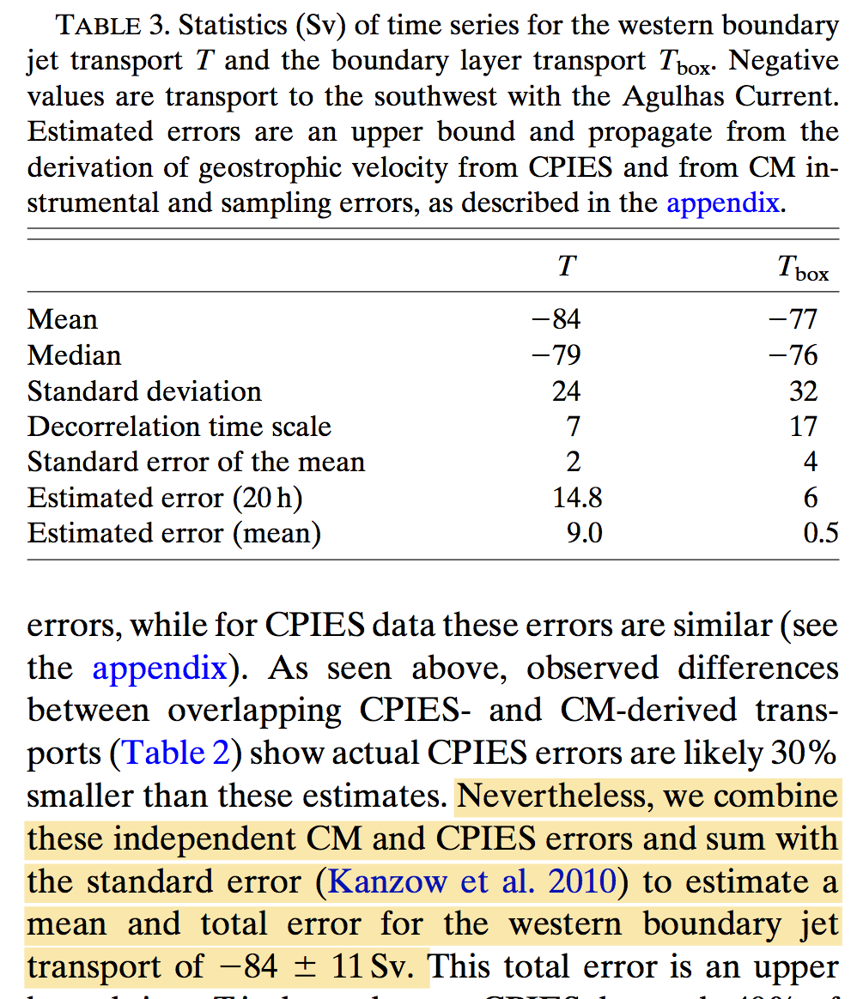] --- class: left, .toc[[✧](#toc)] ## Example Agulhas current boundary transport from .cite[ Beal, L. M. and S. Elipot, Broadening not strengthening of the Agulhas Current since the early 1990s, Nature, 540, 570573, [doi:10.1038/nature19853](http://dx.doi.org/10.1038/nature19853)] <center> 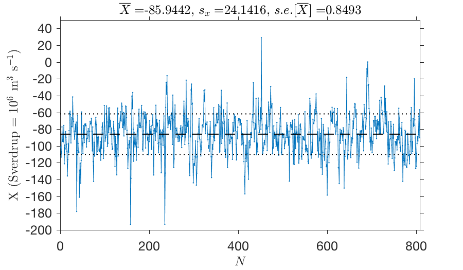 --- class: left, .toc[[✧](#toc)] .center[Depending on your data, your point of view, and your interests, the mean and the variance may tell you a lot, or little, about your data.] -- .center[Thus, you may want to look at the *frequency distribution* plot, or *histogram*, which is a count of your data values in a number of discrete intervals.] <center> 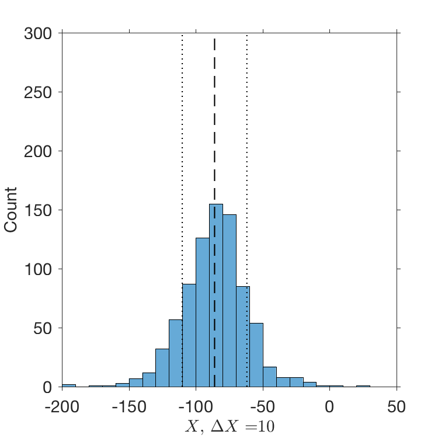 --- class: left, .toc[[✧](#toc)] ## Histogram There is no general rule (only recommendations) on how to choose the size of the bins or the number of bins to be used. <br><br><br> <center> 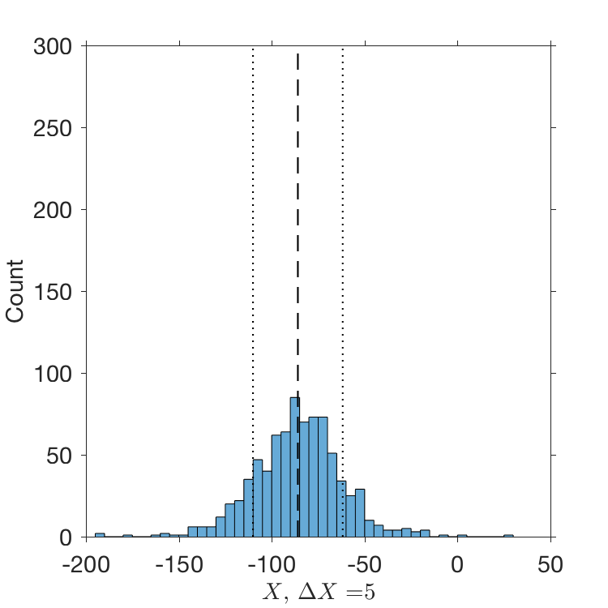 --- class: left, .toc[[✧](#toc)] ## Histogram There is no general rule (only recommendations) on how to choose the size of the bins, or the number of bins to be used. <br><br><br> <center> 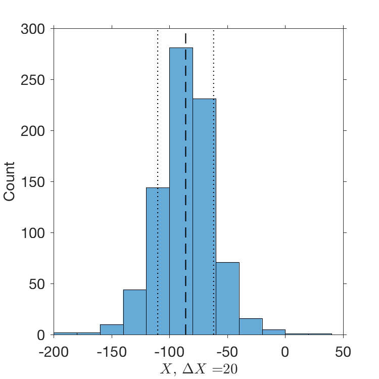 --- class: left, .toc[[✧](#toc)] ## Histogram The frequency of occurences of a given value $x=a$ is quantity derived from $x$ and can be itself estimated. The red line in this plot shows a *kernel estimate* of the histogram (see practical session this afternoon). <center> 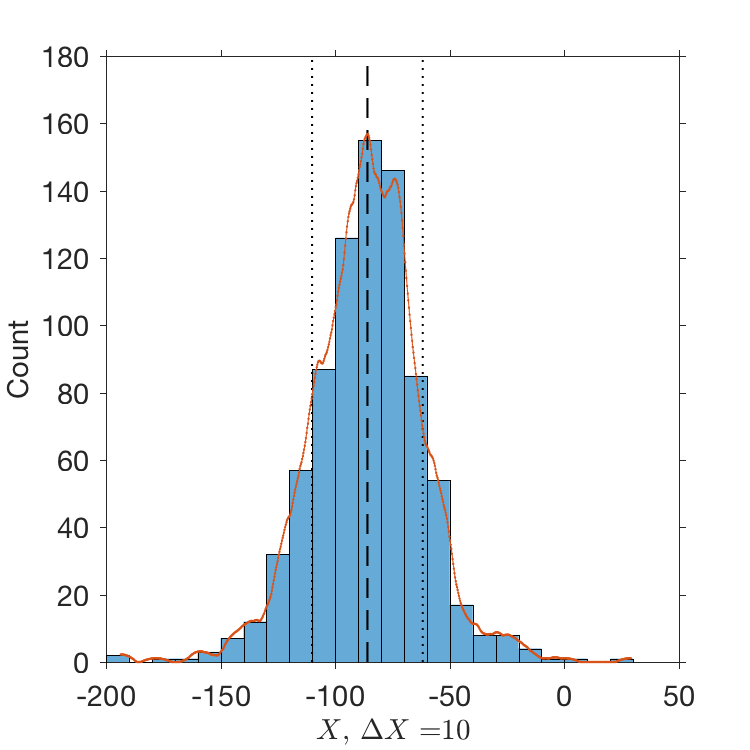 --- class: left, .toc[[✧](#toc)] ### Probability function Let's consider the probability, or relative count of occurences, to obtain a value $X$ in the interval `$[x_{k-1},x_k]$`. This defines a *probability function*: `$$ P^*(x_{k-1}\leq X\leq x_k) = P^*_k = \frac{c_k}{N},\quad c_k \text{ count in } [x_{k-1},x_k]$$` .left-column[ 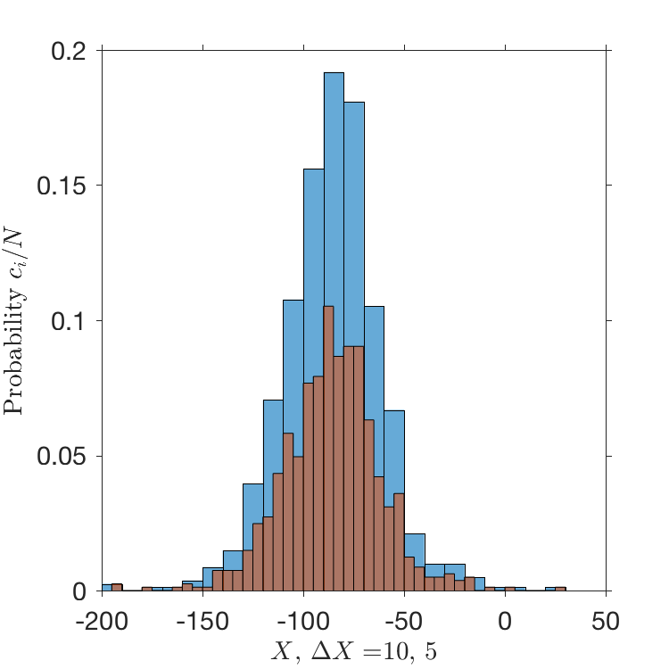 ] .right-column[ <br><br><br> `$$ \sum_{k} P^*_k = 1, \quad k \text{: interval index}$$` But the overall values of $P^*_k$ still depend on the width $\Delta X$ of the bins. See this example with `$\Delta X = 10$ and $\Delta X = 5$`.] --- class: left, .toc[[✧](#toc)] ### PDF and CFD Let's consider instead the discrete *probability density function*, or *PDF*: `$$P(x_{k-1}\leq X\leq x_k) = P_k = \frac{c_k}{N \Delta X}, \quad \Delta X = x_{k}-x_{k-1}$$` -- and the discrete *cumulative (probability) distribution function*, or *CDF*: `$$F(x_k) = P^*(x_0\leq X\leq x_k) = P^*(X\leq x_k) = \sum_{i \leq k} P^*_i$$` -- Since all the values $X$ are contained between `$\min[X]$` and `$\max[X]$`: `$$ \begin{eqnarray} P(\min[X]\leq X\leq \max[X]) &=& 1 \quad \text{or}\quad \sum_{k} P_k \Delta X = \left(\frac{N}{N\Delta X}\right)\Delta X = 1\cr F(\max[X]) &=& 1\cr \end{eqnarray} $$` --- class: left, .toc[[✧](#toc)] ### PDF and CFD The overall values of the PDF and CDF do not depend on the bin width. However, their resolution (or detailed shapes) do. .left-column[ 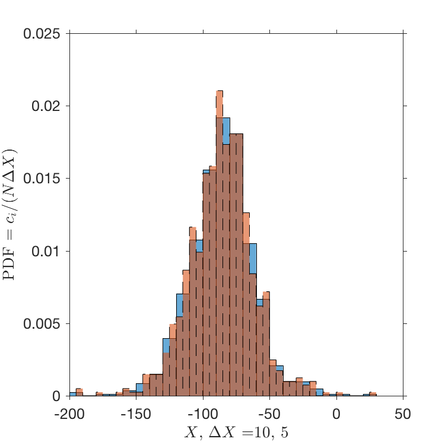 ] .right-column[ 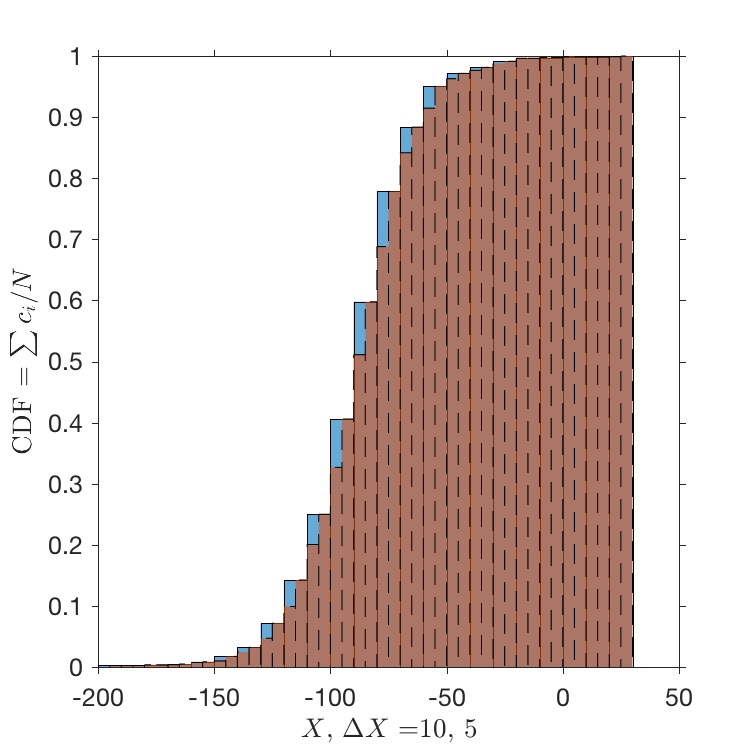 ] --- class: left, .toc[[✧](#toc)] ### PDF and CDF As one reduces the size of the bins, $\Delta X \rightarrow 0$, the *continuous PDF* and *CDF* are approximated: `$$ P(x\leq X \leq x + \Delta X) \longrightarrow p(x) = \frac{d f(x)}{d x} $$` `$$F(x) = P(X\leq x)\Delta X \longrightarrow f(x) = \int_{-\infty}^x p(x')\,dx'$$` with the property `$$ \sum_k P_k \Delta X = 1 \longrightarrow \int_{-\infty}^{+\infty} p(x)\, dx = f(+\infty) - f(-\infty) = 1 - 0 = 1 $$` --- class: left, .toc[[✧](#toc)] ### PDF and statistics We can now give some formal definitions: `$$ \begin{eqnarray} \mu_x &\equiv& \int_{-\infty}^{+\infty} x p(x)\, dx, \quad \sigma^2_x \equiv \int_{-\infty}^{+\infty} (x - \mu_x)^2 p(x)\, dx \cr \mu_n &\equiv& \int_{-\infty}^{+\infty} (x - \mu_x)^n p(x)\, dx \cr \end{eqnarray} $$` The last expression defines `$\mu_n(x)$` the `$n$`-th *central moment* of `$x$`. -- The discrete equivalent is `$$ \mu_n \equiv E[(X-\mu_x)^n] $$` -- The second central moment `$\mu_2$` is the variance, by definition. The mean is the first moment about the origin (`$0$`), that is `$\mu_x = \int_{-\infty}^{+\infty} (x-0) p(x)\, dx$` --- class: left, .toc[[✧](#toc)] ### 3rd moment: skewness The third normalized central moment is called the *skewness*. It describes the tendency for an *asymmetry* between positive excursions and negative excursions of the PDF: `$$ \gamma_x \equiv \frac{\mu_3}{(\mu_2)^{3/2}} = \frac{\mu_3}{(\sigma^2_x)^{3/2}} $$` One (biased) estimator is `$$ \widehat{\gamma}_x \equiv \frac{\frac{1}{N}\sum_{n=1}^N (X_n - \overline{X})^3} {\left[\frac{1}{N}\sum_{n=1}^N (X_n - \overline{X})^2\right]^{3/2}} $$` <center>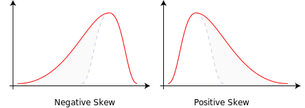</center> --- class: left, .toc[[✧](#toc)] ### 4th moment: kurtosis The fourth normalized central moment is called the *kurtosis*. It describes the *peakedness* (concentration near `${\mu}_x$`), or a tendency for *long tails* (concentration far from `${\mu}_x$`): `$$ \kappa_x \equiv \frac{\mu_4}{(\mu_2)^{2}} = \frac{\mu_4}{(\sigma^2_x)^{2}} $$` One (biased) estimator is `$$ \widehat{\kappa}_x \equiv \frac{\frac{1}{N}\sum_{n=1}^N (X_n - \overline{X})^4} {\left[\frac{1}{N}\sum_{n=1}^N (X_n - \overline{X})^2\right]^{4/2}} $$` Because the kurtosis of a normal, or Gaussian, distribution is equal to `$3$`, often the *excess kurtosis* `$\kappa_x -3$` is considered. .cite[See Moors (1986), “The Meaning of Kurtosis: Darlington Reexamined”.] --- class: left, .toc[[✧](#toc)] ## Illustration of Kurtosis Distributions corresponding to different values of excess kurtosis. <center><img style="width:75%" src="./figures/Standard_symmetric_pdfs.png"></center> Positive excess kurtosis corresponds to long tails and peakedness. --- class: left, .toc[[✧](#toc)] ### Kurtosis: example .left-column[ <center>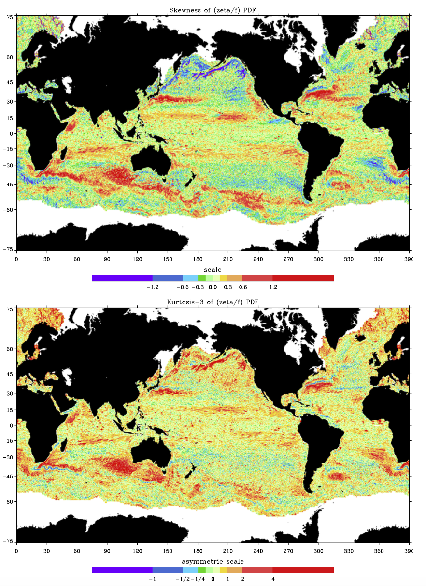</center> ] .right-colum[.cite[Hughes et al. (2010) *Identification of jets and mixing barriers from sea level and vorticity measurements using simple statistics*] They used the statistics and PDF of sea level anomalies and derived relative vorticity to show that strong oceanic jets tend to be identified by a zero contour in skewness coinciding with a low value of kurtosis. ] --- class: left, .toc[[✧](#toc)] ## Why is this useful? I think that plotting the histogram of your data, and further estimating in detail its PDF, gives you a holistic, or global view, of the *data population* from which your sample is drawn. Maybe you will find that the estimated PDF of a sample on a given day is different from the estimated PDF on another day ... -- It also allows you to answer questions such as: what is the most probable value of the data? How often do we observe extreme values? etc. -- In addition, the knowledge of your data distribution, and/or a choice of a *model* for your data distribution will allow you to define *confidence intervals* for your estimated parameters, and to proceed to conduct *hypothesis testing* in your research. -- Before looking at this, we need to review the theory of various probability distribution functions. --- class: left, .toc[[✧](#toc)] ## But first an example Animation (#joyplot) by [Gavin Schmidt](https://twitter.com/ClimateOfGavin) showing global temperature distribution in 10-yr windows, see his blog post on [realclimate.org](http://www.realclimate.org/index.php/archives/2017/07/joy-plots-for-climate-change/#more-20524). Data from the [NASA GISS Surface Temperature Analysis (GISTEMP) dataset](https://data.giss.nasa.gov/gistemp/). <center>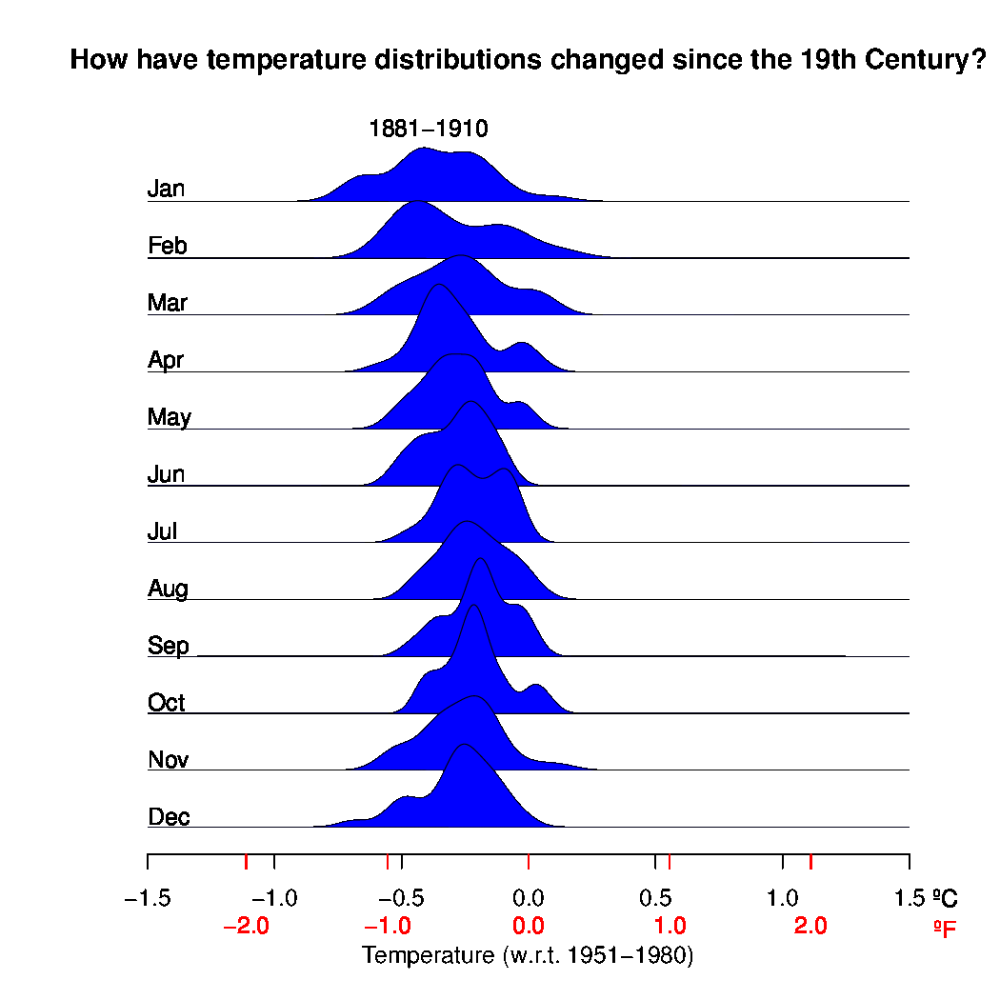</center> --- name: distributions class: center, middle, .toc[[✧](#toc)] # 3. Common Distributions --- name: uniform class: left, .toc[[✧](#toc)] ## The uniform distribution A random variable `$x$` that is *uniformly distributed* between `$x_1$` and `$x_2$` has for PDF: `$$ \begin{eqnarray} p(x) &=& \frac{1}{x_2-x_1},\quad &x_1\leq x \leq x_2\cr &=& 0, &\text{ otherwise}\cr \end{eqnarray} $$` The mean of this distribution is `$(x_1+x_2)/2$` and its standard deviation is `$(x_2-x_1)/(2\sqrt{3})$` .left-column[ 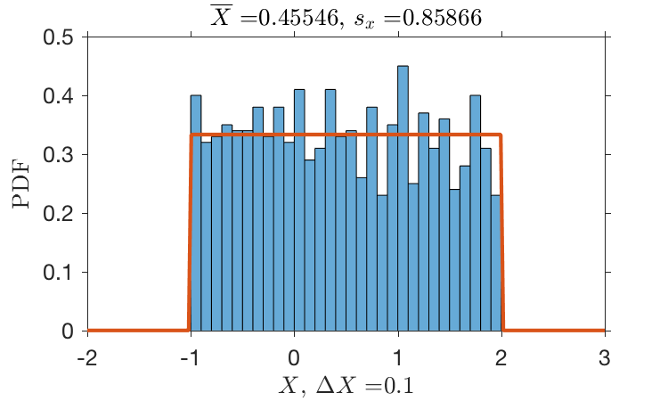 ] .right-column[ .center[ `$$\mu_x = 0.5,\quad \sigma_x = \frac{2--1}{2\sqrt(3)} = 0.8660$$` ] ```ruby z = rand(1000,1);x1 = -1; x2 = 2; x = (x2-x1)*z + x1; ``` ] --- name: normal class: left, .toc[[✧](#toc)] ## The normal distribution (or Gaussian) A random variable `$x$` that is normally distributed with mean `$\mu_x$` and standard deviation $\sigma_x$ has for PDF: `$$ p(x) = \frac{1}{\sigma_x \sqrt{2\pi}}\exp\left[{-\frac{(x-\mu_x)^2}{2\sigma^2_x}}\right] \equiv \mathcal{N}(\mu_x,\sigma_x) $$` -- If `$x \sim \mathcal{N}(\mu_x,\sigma_x)$` then the variable `${\displaystyle z=\frac{x-\mu_x}{\sigma_x} \sim \mathcal{N}(0,1)}$` Hereafter, `$\sim$` will mean "distributed like". -- In Matlab, the following generates a data vector `$\mathbf{z}$` containing 1000 samples from a r.v. `$\sim \mathcal{N(0,1)}$`, and a data vector `$\mathbf{x}$` from a r.v. `$\sim \mathcal{N(2.1,1.35)}$` ```ruby z = randn(1000,1); x = 1.35*z + 2.1; ``` --- class: left, .toc[[✧](#toc)] ## The normal distribution The red curve is the theoretical normal PDF `$\mathcal{N(2.1,1.35)}$`. The histogram is computed from a sample of size `$N=1000$`. .center[ 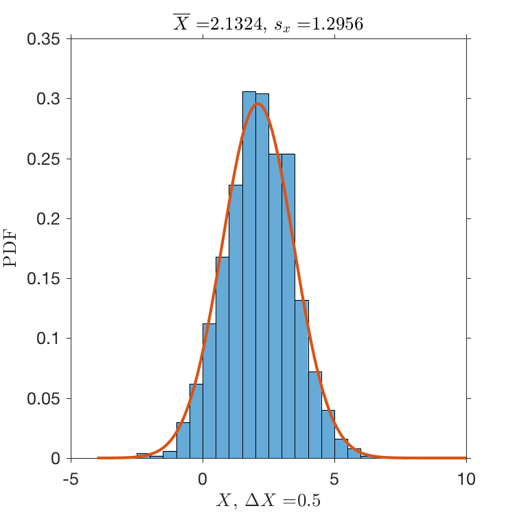 ] --- class: left, .toc[[✧](#toc)] ## The normal distribution The normal distribution is of particular importance because of the *central limit theorem* which asserts roughly that the normal distribution is the result of the sum of a large number of independent random variable acting together. -- To be more specific, let $x_1, x_2,\ldots,x_i,\ldots,x_N$ be $N$ **independent** r.v. with individual means $\mu_i$ and variances $\sigma_i^2$. Now consider the new r.v. `$$ x = a_1 x_1 + a_2 x_2 + \ldots + a_N x_N. $$` The central limit theorem states that, as $N\rightarrow +\infty$, $x$ will be **normally** distributed with mean `$\sum_k a_k \mu_k$` and variance `$\sum_k a^2_k \sigma^2_k$`. In practice, the CLT is used for `$N$` "large". -- In fact, we have already used the central limit theorem ... --- class: left, .toc[[✧](#toc)] ### The normal distribution and the CLT Recall that the sample mean of the record `$X_1,X_2,\ldots,X_N$` is defined as `$$ \overline{X} = \frac{1}{N}\sum_{n=1}^N X_n = \left(\frac{1}{N}\right)X_1 + \left(\frac{1}{N}\right)X_2 + \ldots + \left(\frac{1}{N}\right)X_N $$` Here, `$\overline{X}$` can be seen as a new r.v. which is the sum of individual r.v. (for which we have only one value) with the same population mean `$\mu_x$`, and same population variance `$\sigma^2_x$`. -- Hence, the CLT states that, for `$N$` large enough, `$\overline{X}$` is normally distributed with mean `$\sum_{n=1}^N (1/N)\mu_x = (N/N)\mu_x = \mu_x$` and variance `$\sum_{n=1}^N (1/N)^2\sigma^2_x = (N/N^2)\sigma^2_x = (1/N)\sigma^2_x$`, where this last result was given previously without explanation. --- name: chi2 class: left, .toc[[✧](#toc)] ## The `$\chi^2_n$` distribution Let `$z_1,z_2,\ldots,z_n$` be `$n$` independent r.v. `$\sim \mathcal{N}(0,1)$`. Let a new r.v. defined as `$$ \chi^2 = z_1^2 + z_2^2 + \ldots + z^2_n $$` -- It is said that this r.v. is a "chi-squared" variable with `$n$` degrees of freedom (DOF). -- Such r.v. has for PDF: `$$ p(x) = \frac{x^{\frac{n}{2}-1} \exp(-\frac{x}{2})}{2^\frac{n}{2}\Gamma(n/2)} \equiv \chi^2(n) \text{ or } \chi^2_n $$` The mean of this distribution is `$n$` and its variance is `$2n$`. -- Examples of `$\chi^2$` variables are power spectral density function estimates (see Lecture 4 on time series analysis) or variance estimates. The sample variance of $x\sim \mathcal{N}(\mu_x,\sigma_x)$ is $ s^2_x \sim \frac{\sigma_x^2}{N-1}\chi^2(N-1)$ --- class: left, .toc[[✧](#toc)] ## The `$\chi^2_n$` distribution In this example, the red curve is the theoretical `$\chi^2_n$` PDF for `$n = 14$`. The histogram is computed from a sample of size `$N=1000$`. .center[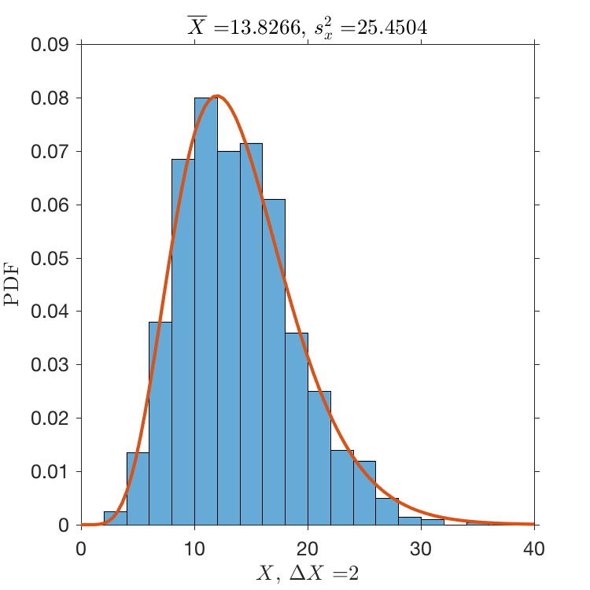] --- name: F class: left, .toc[[✧](#toc)] ## The F distribution If `$x \sim \chi^2_n$` and `$y \sim \chi^2_m$` then the following variable `$$ \frac{x/n}{y/m} \sim F(n,m) $$` is `$F$` distributed with `$n$` and `$m$` degrees of freedom. The mathematical expression for this distribution is very complicated and not very useful here, see reference [[1]](#references). The mean value of the `$F$` distribution is `$m/(m-2)$` for `$m>2$` and its variance is `$$ \frac{2 m^2(n+m-2)}{n(m-2)^2(m-4)} \text{ for } m>4 $$` The `$F$` distribution arises as an example when testing for the equality of two population variances (see practical this afternoon). --- name: tstudent class: left, .toc[[✧](#toc)] ## The Student's `$t$` distribution Let `$y$` and `$z$` be two independent r.v. with `$y \sim \chi^2_n$` and `$z \sim \mathcal{N}(0,1)$`. Let be a new r.v. defined as `$$ t = \frac{z}{\sqrt{\frac{y}{n}}} $$` It is said that this r.v. is a Student's `$t$` variable with `$n$` degrees of freedom (DOF). -- Such r.v. has for PDF: `$$ p(x) = \frac{\Gamma[(n+1)/2]}{\sqrt{\pi n} \Gamma(n/2)} \left[1+\frac{x^2}{n}\right]^{\frac{n+1}{2}} \equiv t(n ) \text{ or } t_n $$` The mean is `$0$` for `$n>0$` and the variance is `$\frac{n}{n-2}$` for `$n>2$`. An example of $t$ distributed r.v. is the estimate of the mean of a population with unknown variance, as we will see later. --- class: left, .toc[[✧](#toc)] ## The Student's `$t$` distribution In this example, the red curve is the theoretical `$t_n$` PDF for `$n = 10$`. The histogram is computed from a sample of size `$N=1000$`. The black curve is the theoretical PDF `$\mathcal{N}(0,1)$`. .center[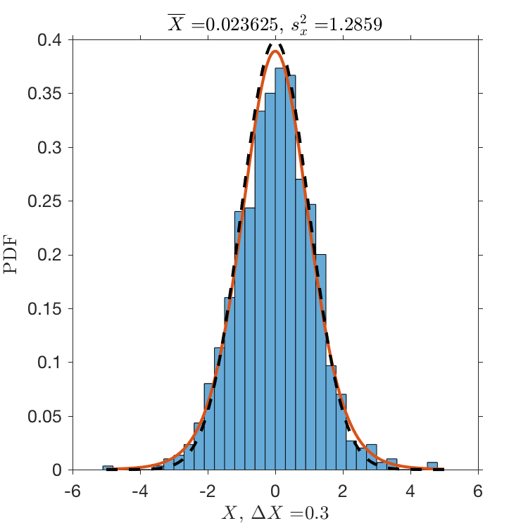] --- exclude: true name: exponential class: left, .toc[[✧](#toc)] ## The exponential distribution A random variable `$x$` that is *exponentially distributed* with parameter `$\beta$` has for PDF: `$$ p(x) = \frac{1}{\beta} \exp(-x/\beta) $$` The mean for $x$ is `$\mu_x = \beta$` and the variance is `$\sigma^2_x = \beta^2$`. .right-column[ <br><br><br> Example: the red curve is the theoretical exponential PDF for `$\beta = 3$`. The histogram is computed from a sample of size `$N=1000$`.] .left-column[ 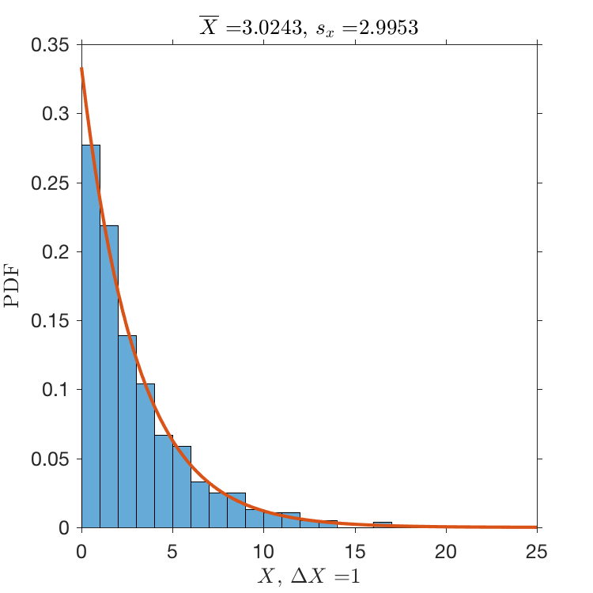 ] --- name: gamma class: left, .toc[[✧](#toc)] ## The Gamma ($\Gamma$) distribution family In fact, the `$\chi^2_n$` distribution and the exponential distribution are two particular cases of the Gamma ($\Gamma$) distribution family. A random variable `$x$` that is *Gamma distributed* with parameters `$\alpha$` and `$\beta$` has for PDF: `$$ p(x) = \frac{x^{\alpha-1}\exp[-x/\beta]}{\beta^\alpha \Gamma(\alpha)}, \quad \beta>0;\, 0\leq x \leq +\infty $$` with the $\Gamma$ function defined as `$$ \begin{eqnarray} \Gamma(\alpha) &=& \int_0^{+\infty} x'^{\alpha-1} \exp(-x')\,dx' \cr \Gamma(n) & = & (n-1)! \quad \text{for $n$ integer} \cr \Gamma(\alpha) &=& (\alpha - 1)\Gamma(\alpha - 1) \text{ for $\alpha$ continuous with } \Gamma(1) = 1\cr \end{eqnarray} $$` `$\alpha = 1 \longrightarrow$` exponential distribution `$\alpha = \frac{n}{2},\quad \beta = 2 \longrightarrow$` `$\chi^2_n$` distribution --- name: errors class: center, middle, .toc[[✧](#toc)] # 4. Uncertainties, errors and hypothesis testing --- class: left, .toc[[✧](#toc)] ###Probability statements We use distributions to make probability statements about our r.v. estimates. -- It is useful to consider the following. For any given PDF `$p(z)$`, and associated CDF `$f(z)$`, of the variable `$z$`, let's denote `$z_\alpha$` the value that corresponds to $f(z) = 1-\alpha$, that is `$$ \begin{eqnarray} f(z_\alpha) = \int_{-\infty}^{z_\alpha} p(z)\, dz = \text{Prob}[z \leq z_\alpha] = 1- \alpha \cr \end{eqnarray} $$` .center[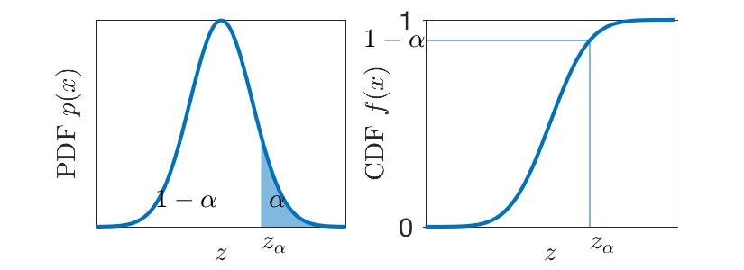] BEWARE that this the convention used here. It is notably different in Matlab where icdf('normal',1-`$\alpha$`,0,1) returns the value `$z_{\alpha}$` <!-- 1-f(z_\alpha) = \int^{+\infty}_{z_\alpha} p(z)\, dz = \text{Prob}[z > z_\alpha] = \alpha \cr --> --- class: left, .toc[[✧](#toc)] ## Confidence intervals PDFs are used to derive confidence intervals (CI), the interpretation of which is subtle. What is a CI for you? -- Given an estimate `$\widehat{\phi}$` of a quantity `$\phi$`, and a chosen significance level `$\alpha$`, we construct an interval with lower bound `$\phi_L$` and upper bound `$\phi_U$` so that this interval is expected to cover the true, unknown, but fixed value of `$\phi$`, with probability `$1-\alpha$`. -- In other words, if we could repeat the estimation and calculation of the CI many times, we can expect that the true unknown parameter `$\phi$` is covered by the calculated CI, 95 out of 100 times. -- There is no probability statement about `$\phi$`, only about `$\widehat{\phi}$` and `$[\phi_L,\phi_U]$`. --- class: left, .toc[[✧](#toc)] ## Confidence intervals As a concrete example, consider the sample mean `$\overline{X}$` of `$x \sim \mathcal{N}(\mu_x,\sigma_x)$`. We stated earlier that `$\overline{X} \sim \mathcal{N}(\mu_x,\sigma_x/\sqrt{N})$`. As such, we can state that the new "transformed" variable `$$ z = \frac{\overline{X}-\mu_x}{{\sigma_x}/{\sqrt{N}}} \sim \mathcal{N}(0,1) $$` and that we can find two `$z$` values such that `$$ \text{Prob}\left[z_{1-\alpha/2} < \frac{\overline{X}-\mu_x}{{\sigma_x}/{\sqrt{N}}} \leq z_{\alpha/2}\right] = 1-\alpha $$` --- class: center, .toc[[✧](#toc)] ## Confidence intervals: normal case `$$ \text{Prob}\left[z_{1-\alpha/2} < \frac{\overline{X}-\mu_x}{{\sigma_x}/{\sqrt{N}}} \leq z_{\alpha/2}\right] = 1-\alpha $$` .center[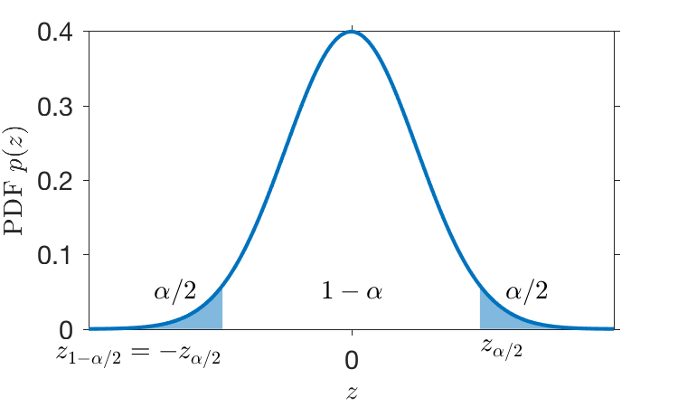] Since, the normal distribution is symmetric around zero, `$z_{1-\alpha/2}=-z_{\alpha/2}$` --- class: left, .toc[[✧](#toc)] ## Confidence intervals: normal case As a result, the normalized calculated variable `$z$` is such that `$$ -z_{\alpha/2} < z = \frac{\overline{X}-\mu_x}{{\sigma_x}/{\sqrt{N}}} \leq z_{\alpha/2} $$` with `$1-\alpha$` probability. After rearranging, we can state that the true mean `$\mu_x$` of the r.v. `$x$` is such that `$$ \overline{X} - \frac{\sigma_x z_{\alpha/2}}{\sqrt{N}} \leq \mu_x < \overline{X} + \frac{\sigma_x z_{\alpha/2}}{\sqrt{N}} $$` with a *confidence of $100(1-\alpha)\%$*. In common parlance, a 95% CI for `$\mu_x$` is `$$ \left[\overline{X}- \frac{\sigma_x z_{\alpha/2}}{\sqrt{N}}, \overline{X}+\frac{\sigma_x z_{\alpha/2}}{\sqrt{N}} \right] $$` --- class: left, .toc[[✧](#toc)] ## Confidence intervals: normal case Typical intervals used are: `$90\% \text{ CI}: \quad \alpha = 0.1 \longrightarrow z_{\alpha/2} = 1.6449$` `$95\% \text{ CI}: \quad \alpha = 0.05 \longrightarrow z_{\alpha/2} = 1.9600$` `$99\% \text{ CI}: \quad \alpha = 0.01 \longrightarrow z_{\alpha/2} = 2.5758$` Before the advent of advanced softwares, people relied on statistical tables for the values of `$z$`, such as the ones found in the Appendices of references [[1],[2],[3],[6]](#references). --- class: center, .toc[[✧](#toc)] ## Confidence intervals: normal case Example from Bendat and Piersol (2011): `$95\% \text{ CI}: \quad \alpha = 0.05 \longrightarrow \alpha/2 = 0.0250$` .center[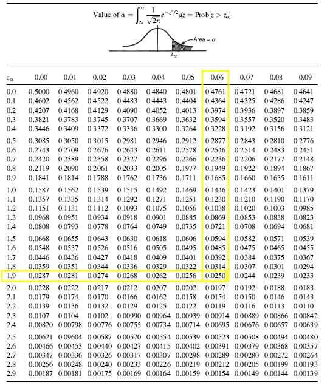] --- class: left, .toc[[✧](#toc)] ### Confidence intervals: normal case; example: Using a CTD record of temperature at 24 Hz, we estimate the mean temperature near 70 db pressure level by averaging data points within .5 db of 70 db (falling rate is 1-2 m/s), `$N=11$`. We find `$\overline{T} = 19.21359$`. From the [specification sheet](#911specs) of the CTD 911 Plus, the accuracy of the temperature sensor is `$0.001$`, which we interpret as being the random error or std of $T$, i.e. `$\sigma_T$`, ignoring a possible bias. -- We use `$(\overline{T}-\mu_T)/(\sigma_T/\sqrt{N}) ~\sim \mathcal{N}(0,1)$`, and based on the previous formula, the 95% CI for the true mean `$\mu_{T}$` is: `$$ 19.21359 - \frac{0.001 \times 1.96}{\sqrt{11}} \leq \mu_T < 19.21359 + \frac{0.001 \times 1.96}{\sqrt{11}} $$` `$$ \Rightarrow 19.21300 \leq \mu_T < 19.21418 $$` Alternatively, once can state that the estimate of the mean with 95% uncertainty is `$$ {\mu_T} = 19.21359 \pm 0.00059 $$` --- class: left, .toc[[✧](#toc)] ## Confidence intervals: `$t$` case Now imagine that you obtain the data from the previous example but do not know the specification of the sensor used, that is `$\sigma_T$`. Instead, you can consider the sample standard deviation `$s_T$` as an estimate of the unknown `$\sigma_T$`. -- It can be shown (not obvious), that `$$\frac{\overline{T}-\mu_T}{s_T/\sqrt{N}} ~\sim \mathcal{t}(N-1)$$` -- Thus, a `$100(1-\alpha)$`% CI for the true mean `$\mu_{T}$` is: `$$ \left[\overline{T} - \frac{s_T t_{N-1;\alpha/2}}{\sqrt{N}} \leq \mu_T < \overline{T} + \frac{s_T t_{N-1;\alpha/2}}{\sqrt{N}} \right] $$` where `$t_{N-1;\alpha/2}$` is the value of the `$t_{N-1}$` variable such that `$$ \text{Prob}\left[ t \leq t_{N-1;\alpha/2}\right] = 1 - \frac{\alpha}{2} \quad \text{ or } \quad \text{Prob}\left[ t > t_{N-1;\alpha/2}\right] = \frac{\alpha}{2} $$` The `$t$` distribution is symmetric like the normal distribution so that `$t_{N;1-\beta} = -t_{N;\beta}$` --- class: left, .toc[[✧](#toc)] ## Confidence intervals: `$t$` case Going back to our CTD example, we still have `$\overline{T} = 19.21359$` but now calculate `$s_T = 0.02277$`. Since `$t_{40-1;0.05/2} = 2.0227$`, the 95% CI for $\mu_T$ becomes: `$$ 19.21359 - \frac{0.02277 \times 2.0227}{\sqrt{1}} \leq \mu_T < 19.21359 + \frac{0.02277 \times 2.0227}{\sqrt{11}} $$` `$$ \Rightarrow 19.19829 \leq \mu_T < 19.22889 $$` Alternatively once can state that the estimate of the mean with 95% uncertainty is `$$ {\mu_T} = 19.21359 \pm 0.01530 $$` -- Previously, we stated that `$$ {\mu_T} = 19.21359 \pm 0.00059 $$` So what is the right answer? -- It is arguable ... --- class: left, .toc[[✧](#toc)] To attempt to answer this question, let's look at the data. The blue curve is the 24 Hz temperature data, and the red curve and shading show the 1 db bin averages and 95% CI using the `$t$` distribution. .center[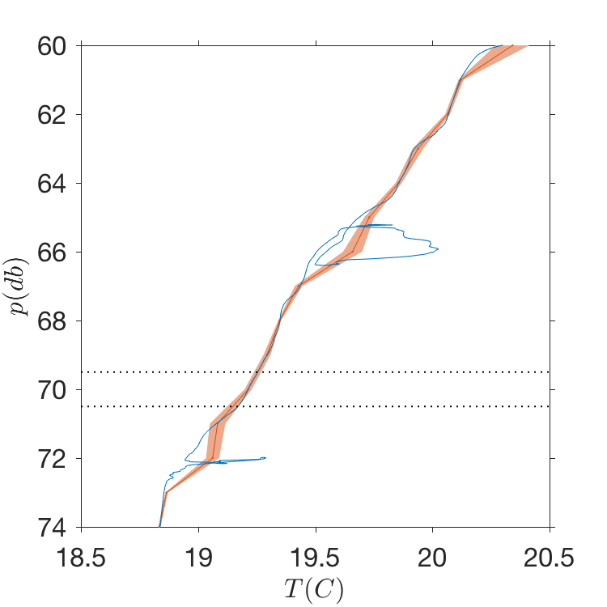] --- class: left, .toc[[✧](#toc)] ### Instrumental vs sampling/model errors When we use `$\overline{T}$` as an estimate of the temperature at 70 db, we assumed that the $N=11$ records of temperature at 24 Hz had the same expectation and variance. -- However, we know based on our oceanographic knowledge that the temperature is not necessarily a constant with depth. Here, the obvious temperature gradient with depth makes us think that the expected temperature at 69.5 db is not the same as at 70.5 db. -- Thus, when we calculate an arithmetic average (`$\overline{T}$`) of temperature that is a function depth, it is an estimate of a temperature quantity that is variable because of 1) the accuracy of the sensor, and 2) the varying expectation value. -- Traditionally, this second type of error is called a *sampling error* or a *model error*, which adds to the first type of error called *instrumental error*. -- Part of the analysis of your data is to understand, or model, the sources or variance and hence of errors when calculating derived quantities such as mean, variance etc. --- class: left, .toc[[✧](#toc)] ### Interlude: modeling signal and noise Part of the problem of choosing the appropriate variance to estimate errors is choosing a model for the observations. As an example, the measured "process" `$x$` may be the sum of a given signal `$y$` plus instrumental noise `$\varepsilon$`. `$$ x = y + \varepsilon $$` -- If the signal and noise independent, then the total variance of the process is `$$ \begin{eqnarray} \text{Var}[x] & = & \text{Var}[y] &+& \text{Var}[\varepsilon] \cr \sigma^2_x & = & \sigma^2_y &+& \sigma^2_\varepsilon \cr \end{eqnarray} $$` -- In our previous example of the CTD profile, the sample variance of the measurements was likely the sum of the instrumental error and of the "error" from the background shear of temperature. I would tend to choose the second case (`$t$` distribution with unknown variance) to derive CIs. --- class: left, .toc[[✧](#toc)] ## Confidence intervals: `$\chi^2_n$` case .center[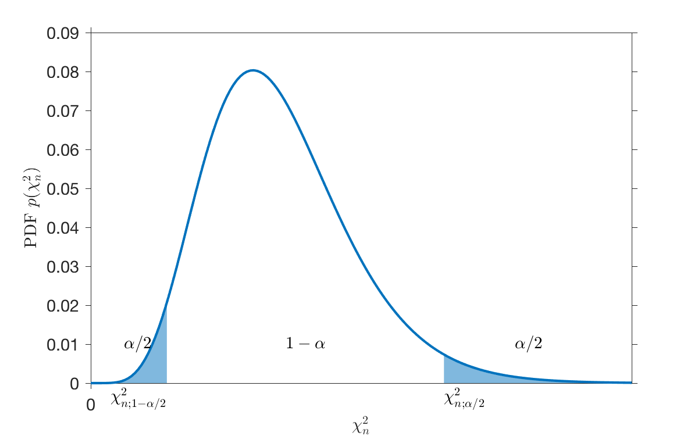] `$$ \text{Prob}\left[\chi^2_{n;1-\alpha/2} < \chi^2_n \leq \chi^2_{n;\alpha/2}\right] = 1-\alpha $$` The `$\chi^2$` distribution is defined for positive values only, and is not symmetric: `$\chi^2_{n;1-\beta} \neq -\chi^2_{n;\beta}$` --- class: left, .toc[[✧](#toc)] ## Confidence intervals: `$\chi^2_n$` case example The `$\chi^2$` distribution can be used to derive CIs for variance estimates. It can be shown that for `$N$` samples drawn from a normally distributed r.v. `$x$` with variance `$\sigma^2_x$`, we have `$$ \frac{(N-1)s^2_x}{\sigma_x^2} \sim \chi^2_{N-1} $$` which can be used to derive $100(1-\alpha)$% CI for variance estimates `$s^2_x$` as `$$ \frac{(N-1)s^2_x}{\chi^2_{N-1;\alpha/2}} \leq \sigma^2 < \frac{(N-1)s^2_x}{\chi^2_{N-1;1-\alpha/2}} $$` --- class: left, .toc[[✧](#toc)] ## Hypothesis testing Confidence intervals are particular cases of *hypothesis testing*, a case of data analysis that occurs frequently. See the introduction of *100 statistical tests* by G. K. Kanji (see reference [[5]](#references)). -- Hypothesis testing does **not** consist in proving or disproving hypotheses. Just like we will never know the true value of a r.v., we will never prove in an indeniable fashion that an hypothesis is true. -- Hypothesis testing consists in showing that an hypothesis cannot be supported given its small probability. How small is your own choice, or the difference between getting published or not published, or a stakeholder taking a decision or action or inaction, etc. -- In general, the hypothesis we are trying to denouce, decry, etc, is one with no change (i.e. `$a = b$`, "the mean temperature today is the same as yesterday"), so that it is typically called the *null hypothesis*, `$H_0$`. When `$H_0$` is rejected because of insufficient probability, we accept the *alternatice hypothesis* `$H_1$` (i.e. `$a \neq b$`, "the mean temperature today is different from yesterday"). --- class: left, .toc[[✧](#toc)] ## Hypothesis testing **Step 1** Define your practical problem in terms of simple hypotheses, a *null hypothesis* and an *alternate hypothesis* that typically leads to action. Decide if you are likely to conduct a *one-tailed* or *two-tailed* test. -- As an example, a null hypothesis is that the population mean `$\mu_x$` of a r.v. `$x$` is equal to a given value `$\mu_0$` (maybe `$0$`). Alternative hypotheses may be that `$\mu_x$` is not equal to `$\mu_0$` (case $1$, two-tailed test), or that `$\mu_x$` is greater or smaller than `$\mu_0$` (cases $2,3$, one-tailed tests). `$$ \begin{eqnarray} & 1. & H_0 : \mu_x = \mu_0 \cr & & H_1 : \mu_x \neq \mu_0 \cr & 2. & H_0 : \mu_x = \mu_0 \cr & & H_1 : \mu_x > \mu_0 \cr & 3. & H_0 : \mu_x = \mu_0 \cr & & H_1 : \mu_x < \mu_0 \cr \end{eqnarray} $$` --- class: left, .toc[[✧](#toc)] ## Hypothesis testing **Step 2** Derive a statistic, that is a number, that can be calculated from your data and your assumptions, typically under your null hypothesis `$H_0$`. Make sure that this number is going to be different when `$H_0$` is true or when `$H_1$` is true. -- Following the previous example, we saw that if `$x$` is normally distributed with known variance `$\sigma_x$`, then the statistic `$z = \frac{\overline{X}-\mu_x}{\sigma_x/\sqrt{N}} \sim \mathcal{N}(0,1)$` .center[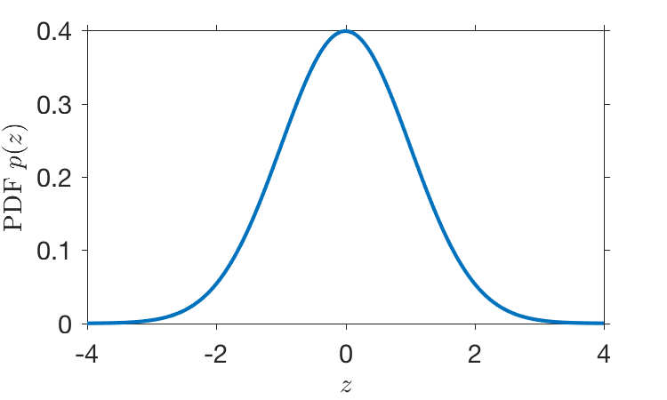] --- class: left, .toc[[✧](#toc)] ## Hypothesis testing **Steps 3 & 4** Choose a *critical region* for your test statistic and a significance level `$\alpha$` that determine the size of your critical region. Critical regions can be of three types; *right-sided* means that you reject `$H_0$` if your test statistic is greater than or equal to some right critical value; *left-sided* you get it; or *both-sided* so that you reject `$H_0$` if your test statistic is either greater than or equal to the right critical value or less than or equal to the left critical value. .center[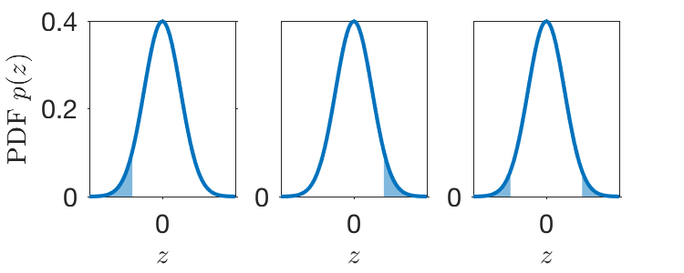] --- class: left, .toc[[✧](#toc)] ## Hypothesis testing **Steps 3 & 4: example** `$$ \begin{eqnarray} & \alpha = 0.05, H_0 : \mu_0 = 4, N = 9, \overline{X} = 4.6, \sigma_x = 1.0 \rightarrow z = \frac{4.6-4}{1/\sqrt{9}} = 1.8 \end{eqnarray} $$` Case 1: `$z_{1-0.05/2} = -1.96 < z = 1.8 < z_{0.05/2} = 1.96$` `$z$` is outside of the critical region! No reason to reject `$H_0$` (i.e. we accept that the mean is not different from `$\mu_0$`) Case 2: `$z = 1.8 > z_{1-0.05} = 1.64$` `$z$` is in the critical region for a right-sided test! We can reject `$H_0$` (in the sense that the mean appears larger than `$\mu_0$`) Case 3: `$z_{0.05} = -1.64 \leq z = 1.8 $` `$z$` is outside the critical region for a left-sided test! No reason to reject `$H_0$` (in the sense that it mean does not appear to be less than `$\mu_0$`). --- class: left, .toc[[✧](#toc)] ## Hypothesis testing Please see the book by G. K. Kanji, *100 Statistical Tests*, (2006)! It is very handy ... --- class: left, .toc[[✧](#toc)] ### One last thing: Error propagation We saw common cases where the statistics were `$x \sim z$`, `$t$`, or `$\chi^2$` r.v. What if we are trying to assess the error or uncertainty for a r.v. `$y$` that is arbitrarily function of `$N$` variables `$x_n$` with *independent* random errors `$\varepsilon_{x_n}$` (maybe the RMS error)? `$$ y = y(x_1,x_2,\ldots,x_N) $$` -- An approximate formula for "small" errors is `$$ \varepsilon^2_y \approx \left(\frac{\partial y}{\partial x_1}\right)^2\varepsilon^2_{x_1} + \left(\frac{\partial y}{\partial x_2}\right)^2\varepsilon^2_{x_2} + \ldots + \left(\frac{\partial y}{\partial x_N}\right)^2\varepsilon^2_{x_N} $$` See reference [[3]](#references). --- class: left, .toc[[✧](#toc)] ## Practical session Please download data at the following link: Please download the Matlab code at the following link: Make sure you have installed and tested the free jLab Matlab toolbox from Jonathan Lilly at [www.jmlilly.net/jmlsoft.html](https://www.jmlilly.net/jmlsoft.html) --- name: extra class: middle, center, .toc[[✧](#toc)] # Extra slides --- class: left, .toc[[✧](#toc)] ## `$t$`-test for two population means (variances unknown and unequal) Following test #9 of Kanji (2006), reference [[5]](#references) The test statistic is `$$ t = \frac{(\overline{X}_1 - \overline{X}_2) - (\mu_1 - \mu_2)} {\left(\displaystyle{ \frac{s^2_1}{n_1} + \frac{s_2^2}{n_2}}\right)^{\frac{1}{2}}} $$` which is used to test `$\mu_1 = \mu_2$`, so that `$t \sim t(0,\nu)$` with `$$ \nu = \frac{\left(\displaystyle{ \frac{s^2_1}{n_1} + \frac{s_2^2}{n_2}}\right)^2} {\displaystyle{\frac{s_1^4}{n_1^2(n_1-1)} + \frac{s_2^4}{n_2^2(n_2-1)}}} $$` --- class: left, .toc[[✧](#toc)] ## Kolmogorov-Smirnov test for distribution The *Kolmogorov-Smirnov* test compares an empirical distribution function `$\widehat{F}$` to a prescribed normal distribution function `${F}$` with mean `$\mu$` and standard deviation `$\sigma$`. It considers the statistic `$$ D = \max_{X_i} |\widehat{F}(X_i) - {F}(\mu,\sigma)| $$` which measures the maximum distance between the two distribution (as seen on a Q-Q plot). The issue is that this test is too conservative when the mean and std of `${F}$` are calculated from the data. An alternative test is called the *Lilliefors test*, which is more stringent. See also test 20 of Kanji (2006), reference [[5]](#references) for another test. In Matlab: ```ruby h = kstest(x); h = lillietest(x); ``` --- exclude: true class: left, .toc[[✧](#toc)] ```ruby plot(t,x) ``` First Header | Second Header ------------ | ------------- Content from cell 1 | Content from cell 2 Content in the first column | Content in the second column ~~this~~